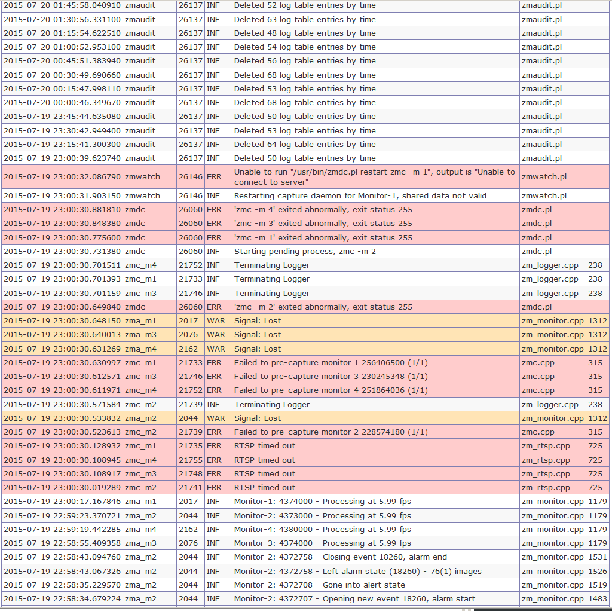

Возникла на днях нештатная ситуация. Ночью в системе видеонаблюдения ZoneMinder v. 1.28.1 отвалились камеры, подключенные через RTSP. Камеры автоматически обратно не подключились.
Все камеры работали, можно смотреть с них поток по RTSP в VLC. Но ZoneMinder показывает IP-шники красным, и захват видео с них не проводил.
Лог в виде картинки (с цветовой разметкой ошибок):

Лог в виде текста:
2015-07-20 01:15:54.622510 zmaudit 26137 INF Deleted 48 log table entries by time zmaudit.pl
2015-07-20 01:00:52.953100 zmaudit 26137 INF Deleted 54 log table entries by time zmaudit.pl
2015-07-20 00:45:51.383940 zmaudit 26137 INF Deleted 56 log table entries by time zmaudit.pl
2015-07-20 00:30:49.690660 zmaudit 26137 INF Deleted 68 log table entries by time zmaudit.pl
2015-07-20 00:15:47.998110 zmaudit 26137 INF Deleted 53 log table entries by time zmaudit.pl
2015-07-20 00:00:46.349670 zmaudit 26137 INF Deleted 68 log table entries by time zmaudit.pl
2015-07-19 23:45:44.635080 zmaudit 26137 INF Deleted 50 log table entries by time zmaudit.pl
2015-07-19 23:30:42.949400 zmaudit 26137 INF Deleted 53 log table entries by time zmaudit.pl
2015-07-19 23:15:41.300300 zmaudit 26137 INF Deleted 64 log table entries by time zmaudit.pl
2015-07-19 23:00:39.623740 zmaudit 26137 INF Deleted 50 log table entries by time zmaudit.pl
2015-07-19 23:00:32.086790 zmwatch 26146 ERR Unable to run "/usr/bin/zmdc.pl restart zmc -m 1", output is "Unable to connect to server" zmwatch.pl
2015-07-19 23:00:31.903150 zmwatch 26146 INF Restarting capture daemon for Monitor-1, shared data not valid zmwatch.pl
2015-07-19 23:00:30.881810 zmdc 26060 ERR 'zmc -m 4' exited abnormally, exit status 255 zmdc.pl
2015-07-19 23:00:30.848380 zmdc 26060 ERR 'zmc -m 3' exited abnormally, exit status 255 zmdc.pl
2015-07-19 23:00:30.775600 zmdc 26060 ERR 'zmc -m 1' exited abnormally, exit status 255 zmdc.pl
2015-07-19 23:00:30.731380 zmdc 26060 INF Starting pending process, zmc -m 2 zmdc.pl
2015-07-19 23:00:30.701511 zmc_m4 21752 INF Terminating Logger zm_logger.cpp 238
2015-07-19 23:00:30.701393 zmc_m1 21733 INF Terminating Logger zm_logger.cpp 238
2015-07-19 23:00:30.701159 zmc_m3 21746 INF Terminating Logger zm_logger.cpp 238
2015-07-19 23:00:30.649840 zmdc 26060 ERR 'zmc -m 2' exited abnormally, exit status 255 zmdc.pl
2015-07-19 23:00:30.648150 zma_m1 2017 WAR Signal: Lost zm_monitor.cpp 1312
2015-07-19 23:00:30.640013 zma_m3 2076 WAR Signal: Lost zm_monitor.cpp 1312
2015-07-19 23:00:30.631269 zma_m4 2162 WAR Signal: Lost zm_monitor.cpp 1312
2015-07-19 23:00:30.630997 zmc_m1 21733 ERR Failed to pre-capture monitor 1 256406500 (1/1) zmc.cpp 315
2015-07-19 23:00:30.612571 zmc_m3 21746 ERR Failed to pre-capture monitor 3 230245348 (1/1) zmc.cpp 315
2015-07-19 23:00:30.611971 zmc_m4 21752 ERR Failed to pre-capture monitor 4 251864036 (1/1) zmc.cpp 315
2015-07-19 23:00:30.571584 zmc_m2 21739 INF Terminating Logger zm_logger.cpp 238
2015-07-19 23:00:30.533832 zma_m2 2044 WAR Signal: Lost zm_monitor.cpp 1312
2015-07-19 23:00:30.523613 zmc_m2 21739 ERR Failed to pre-capture monitor 2 228574180 (1/1) zmc.cpp 315
2015-07-19 23:00:30.128932 zmc_m1 21735 ERR RTSP timed out zm_rtsp.cpp 725
2015-07-19 23:00:30.108945 zmc_m4 21755 ERR RTSP timed out zm_rtsp.cpp 725
2015-07-19 23:00:30.108917 zmc_m3 21748 ERR RTSP timed out zm_rtsp.cpp 725
2015-07-19 23:00:30.019289 zmc_m2 21741 ERR RTSP timed out zm_rtsp.cpp 725
2015-07-19 23:00:17.167846 zma_m1 2017 INF Monitor-1: 4374000 - Processing at 5.99 fps zm_monitor.cpp 1179
2015-07-19 22:59:23.370721 zma_m2 2044 INF Monitor-2: 4373000 - Processing at 5.99 fps zm_monitor.cpp 1179
2015-07-19 22:59:19.442285 zma_m4 2162 INF Monitor-4: 4380000 - Processing at 5.99 fps zm_monitor.cpp 1179
2015-07-19 22:58:55.409358 zma_m3 2076 INF Monitor-3: 4374000 - Processing at 5.99 fps zm_monitor.cpp 1179
2015-07-19 22:58:43.094760 zma_m2 2044 INF Monitor-2: 4372758 - Closing event 18260, alarm end zm_monitor.cpp 1531
2015-07-19 22:58:43.067326 zma_m2 2044 INF Monitor-2: 4372758 - Left alarm state (18260) - 76(1) images zm_monitor.cpp 1526
2015-07-19 22:58:35.229570 zma_m2 2044 INF Monitor-2: 4372708 - Gone into alert state zm_monitor.cpp 1519
2015-07-19 22:58:34.679224 zma_m2 2044 INF Monitor-2: 4372707 - Opening new event 18260, alarm start zm_monitor.cpp 1483
2015-07-19 22:58:34.595852 zma_m2 2044 INF Monitor-2: 4372707 - Gone into alarm state zm_monitor.cpp 1463
В ходе решения проблемы вот что нарыл. Вручную запущенный zmdc.pl выдает следующее:
$ /usr/bin/zmdc.pl restart zmc -m 1
Unable to connect to server
Похоже, что вывалился сервис zoneminder:
# service zoneminder status
ZoneMinder is stopped
Вот какие процессы были запущены в момент, когда сервис zoneminder не работал:
www-data 2017 6.6 1.8 202760 77004 ? S Июл11 872:13 /usr/bin/zma -m 1
www-data 2044 7.3 1.8 202760 76992 ? S Июл11 954:51 /usr/bin/zma -m 2
www-data 2076 6.4 1.8 202760 77000 ? S Июл11 835:51 /usr/bin/zma -m 3
www-data 2162 4.5 1.8 202760 76980 ? S Июл11 591:07 /usr/bin/zma -m 4
root 8239 0.0 0.0 5280 760 pts/3 S+ 12:44 0:00 grep zm
www-data 26125 0.0 0.3 31664 14560 ? S Июл08 0:21 /usr/bin/perl -wT /usr/bin/zmfilter.pl
www-data 26137 0.0 0.2 27024 10024 ? S Июл08 2:49 /usr/bin/perl -wT /usr/bin/zmaudit.pl -c
А вот что стало, после того, как вручную был запущен сервис zoneminder:
www-data 9425 0.0 0.1 25384 6916 pts/3 S 12:59 0:00 /usr/bin/perl -wT /usr/bin/zmdc.pl startup
www-data 9457 2.2 1.8 206816 77112 pts/3 Sl 12:59 0:05 /usr/bin/zmc -m 1
www-data 9458 11.5 1.8 202760 76992 pts/3 R 12:59 0:27 /usr/bin/zma -m 1
www-data 9473 2.3 1.8 206804 77372 pts/3 Sl 12:59 0:05 /usr/bin/zmc -m 2
www-data 9476 13.5 1.8 203952 77784 pts/3 R 12:59 0:32 /usr/bin/zma -m 2
www-data 9491 2.2 1.8 205888 77104 pts/3 Sl 12:59 0:05 /usr/bin/zmc -m 3
www-data 9506 11.7 1.8 202760 76992 pts/3 S 12:59 0:28 /usr/bin/zma -m 3
www-data 9516 1.0 1.8 206664 77120 pts/3 Sl 12:59 0:02 /usr/bin/zmc -m 4
www-data 9517 4.4 1.8 201568 75632 pts/3 S 12:59 0:10 /usr/bin/zma -m 4
www-data 9528 0.0 0.3 31040 13912 pts/3 S 12:59 0:00 /usr/bin/perl -wT /usr/bin/zmfilter.pl
www-data 9536 0.0 0.2 27016 9876 pts/3 S 12:59 0:00 /usr/bin/perl -wT /usr/bin/zmaudit.pl -c
www-data 9543 0.0 0.1 25252 8152 pts/3 S 12:59 0:00 /usr/bin/perl -wT /usr/bin/zmwatch.pl
www-data 9553 0.0 0.3 29296 12544 pts/3 S 12:59 0:00 /usr/bin/perl -w /usr/bin/zmupdate.pl -c
root 9884 0.0 0.0 5276 764 pts/3 S+ 13:03 0:00 grep zm
Видно, что при старте сервиса zoneminder, все процессы были перезапущены (см. на время).
После этого действия ZoneMinder снова стал захватывать видео.
Таким образом, стало понятно, что упал сам ZoneMinder и его ватчдог zmwatch.pl. Для решения проблемы пришлось прописать /etc/crontab:
* * * * * root test "`service zoneminder status`" = "ZoneMinder is stopped" && service zoneminder start
После чего, для теста, искуственно был остановлен сервис zoneminder. Через минуту он был снова автоматически запущен и захват видео работал как прежде.